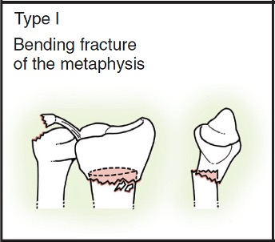
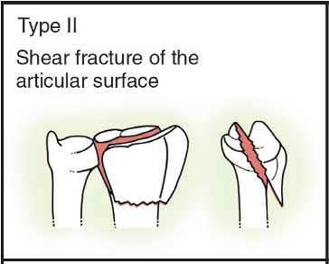
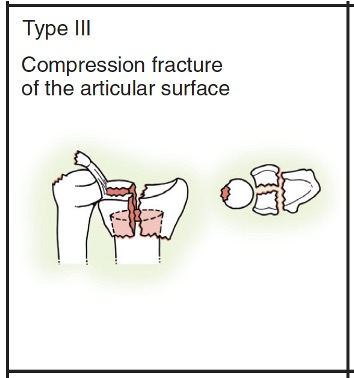
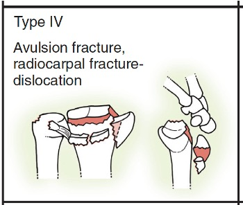
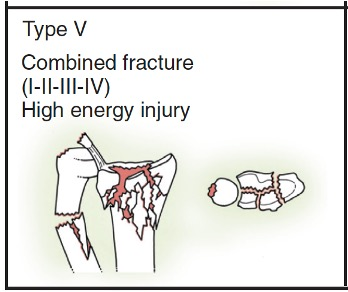

fernandez
Home
Trauma
Adult fractures
Radius & Ulna
Fernandez
Fernandez & Jupiter Classification





Fernández DL. Fractures of the distal radius: operative treatment. Instr Course Lect. 1993;42:73-88.
Link